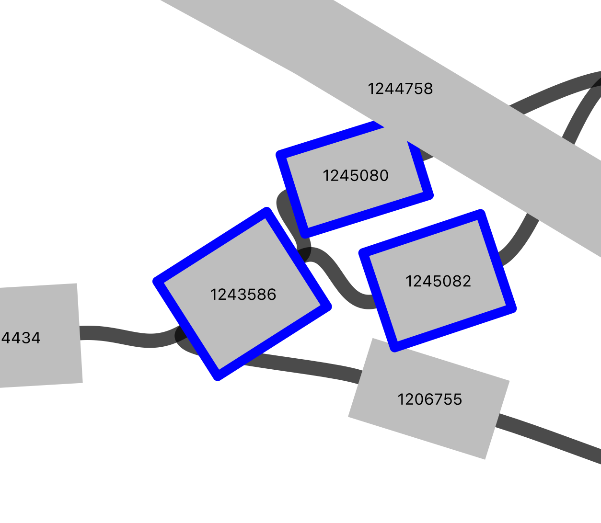

!eris scan ../../data/ecoli/EC958.fasta > eris-outputs/chromosome_fasta.tsvWeek 04: Started explore Bunya and improve the project plan draft
Overview
Daily Log
01-09-2025
- Weekly project meeting
- Dimas has submitted the project plan on the Blackboard
- Dimas started to work on the truth dataset E coli 958
- There are 41 IS annotated in the chromosome + 1 mistery IS
- There are 12 IS annotated in the plasmid pEC958
- RTotal 53 + 1 mistery IS
- Dimas will try simulate reads from the chromosome only, this will help:
- Get only reads from chromosome, not from plasmid
- Handle noise from different genetic composition in the isolates
- Also test the the assembly again
- Using bedtools to find the intersection region IS detected by Eris and other tools with truth
02-09-2025
identify IS in complete chromosome
Eris
!grep "mobile_element" eris-outputs/chromosome_fasta.tsv | wc -l 58Eris identified 58 IS in full genome
import pandas as pd
pd.set_option('display.max_rows', None)
eris_chr = pd.read_csv("eris-outputs/chromosome_fasta.tsv", sep="\t")
eris_chr = eris_chr[eris_chr['Type'] == "mobile_element"]
eris_chr| Genome | Feature | Type | Contig | Start | End | Strand | Partial | Element | Element_distance | ... | Element_effect | Percent_identity | Percent_coverage | Name | Family | Group | Synonyms | Origin | IR | DR | |
|---|---|---|---|---|---|---|---|---|---|---|---|---|---|---|---|---|---|---|---|---|---|
| 1 | EC958 | 759063b0-a786-4892-b826-64b42c376fe4 | mobile_element | HG941718.1 | 233727 | 236259 | 1 | False | 759063b0-a786-4892-b826-64b42c376fe4 | - | ... | - | 99.96050552922591 | 100.0 | ISEc23 | IS66 | NaN | NaN | Escherichia coli | 20/24 | 8 |
| 8 | EC958 | f4d677fe-eab5-4cae-b80c-e45d27a4fd91 | mobile_element | HG941718.1 | 814902 | 815025 | -1 | False | f4d677fe-eab5-4cae-b80c-e45d27a4fd91 | - | ... | - | 96.7479674796748 | 100.0 | MITEEc1 | IS630 | NaN | NaN | Escherichia coli | 18/23 | 2 |
| 11 | EC958 | 41445a13-528f-4ecc-9e8b-921e0e2c609e | mobile_element | HG941718.1 | 1365630 | 1366324 | 1 | True | 41445a13-528f-4ecc-9e8b-921e0e2c609e | - | ... | - | 91.35446685878964 | 55.38707102952913 | ISCfr4 | IS30 | NaN | NaN | Citrobacter freundii | 23/27 | NaN |
| 16 | EC958 | dbecca34-0ea9-4eee-8f66-aa8cefb674cc | mobile_element | HG941718.1 | 1371326 | 1371811 | -1 | True | dbecca34-0ea9-4eee-8f66-aa8cefb674cc | - | ... | - | 92.65306122448979 | 25.05112474437628 | ISSen3 | IS21 | NaN | NaN | Salmonella enterica | 22/28 | 5 |
| 19 | EC958 | f1414017-ad2c-4be8-a8a1-2ed619af30f2 | mobile_element | HG941718.1 | 1372287 | 1373517 | -1 | False | f1414017-ad2c-4be8-a8a1-2ed619af30f2 | - | ... | - | 100.0 | 100.0 | ISEc24 | IS3 | IS51 | NaN | Escherichia coli | 20/25 | NaN |
| 24 | EC958 | 3b9270e7-e3d8-4694-b86c-2bef7ef59b4a | mobile_element | HG941718.1 | 1417638 | 1418621 | -1 | True | 3b9270e7-e3d8-4694-b86c-2bef7ef59b4a | - | ... | - | 98.06714140386572 | 68.93408134642355 | IS4 | IS4 | IS4 | NaN | Escherichia coli | 16/18 | 11 |
| 27 | EC958 | 285e5f3f-1c94-4714-a7dc-5ed278417cab | mobile_element | HG941718.1 | 1479959 | 1482540 | 1 | False | 285e5f3f-1c94-4714-a7dc-5ed278417cab | - | ... | - | 99.96125532739248 | 100.0 | ISEc12 | IS21 | NaN | NaN | Escherichia coli | 20/24 | 5 |
| 32 | EC958 | dc52e995-1b41-4daa-b93a-60b0175248ca | mobile_element | HG941718.1 | 1647528 | 1648819 | 1 | False | dc52e995-1b41-4daa-b93a-60b0175248ca | - | ... | - | 96.59178931061193 | 100.0 | ISEc1 | ISAs1 | NaN | NaN | Escherichia coli | 14/18 | NaN |
| 39 | EC958 | 36352c8e-deaa-434a-8ee8-c558d338f19d | mobile_element | HG941718.1 | 1997445 | 1997536 | 1 | True | 36352c8e-deaa-434a-8ee8-c558d338f19d | - | ... | - | 91.20879120879121 | 6.385964912280702 | IS621 | IS110 | NaN | NaN | Escherichia coli | NaN | NaN |
| 40 | EC958 | 9b36c135-560c-4fb0-9d3b-b6e57b938182 | mobile_element | HG941718.1 | 1997567 | 1998999 | -1 | False | 9b36c135-560c-4fb0-9d3b-b6e57b938182 | - | ... | - | 99.4413407821229 | 100.0 | IS1397 | IS3 | IS150 | NaN | Escherichia coli | 20/25 | 4 |
| 46 | EC958 | d92e3ee7-38e3-4935-a761-0f01f9f42d89 | mobile_element | HG941718.1 | 2135365 | 2136797 | -1 | False | d92e3ee7-38e3-4935-a761-0f01f9f42d89 | - | ... | - | 99.58100558659217 | 100.0 | IS1397 | IS3 | IS150 | NaN | Escherichia coli | 20/25 | 4 |
| 52 | EC958 | 3dbb03ef-fcec-4442-bd79-68213649e872 | mobile_element | HG941718.1 | 2142423 | 2143132 | -1 | False | 3dbb03ef-fcec-4442-bd79-68213649e872 | - | ... | - | 99.15373765867419 | 100.0 | IS200C | IS200/IS605 | IS200 | NaN | Escherichia coli | NaN | NaN |
| 56 | EC958 | ef63700f-2c14-4bc0-8839-0ebf7d06b6a0 | mobile_element | HG941718.1 | 2244066 | 2245788 | -1 | False | ef63700f-2c14-4bc0-8839-0ebf7d06b6a0 | - | ... | - | 95.23809523809523 | 100.0 | ISEc38 | ISL3 | NaN | NaN | Escherichia coli | 21/23 | NaN |
| 62 | EC958 | 0a3280ad-e0c5-458e-9f47-38ae6bf661c5 | mobile_element | HG941718.1 | 2248880 | 2250339 | 1 | False | 0a3280ad-e0c5-458e-9f47-38ae6bf661c5 | - | ... | - | 99.86291980808774 | 100.0 | ISEc20 | IS110 | NaN | NaN | Escherichia coli | NaN | NaN |
| 66 | EC958 | 97b0cf54-d314-4c45-85bf-fa4bf4f43fb5 | mobile_element | HG941718.1 | 2252365 | 2254232 | -1 | False | 97b0cf54-d314-4c45-85bf-fa4bf4f43fb5 | - | ... | - | 94.98464687819856 | 100.0 | IS100kyp | IS21 | NaN | NaN | Yersinia pseudotuberculosis | 20/28 | NaN |
| 71 | EC958 | c4dd4093-3886-4d88-b644-b669fc20bc77 | mobile_element | HG941718.1 | 2265833 | 2268365 | 1 | False | c4dd4093-3886-4d88-b644-b669fc20bc77 | - | ... | - | 99.80252764612955 | 100.0 | ISEc23 | IS66 | NaN | NaN | Escherichia coli | 20/24 | 8 |
| 78 | EC958 | 5e21a57d-ea7b-4793-9240-2c82ff3b5721 | mobile_element | HG941718.1 | 2271109 | 2273690 | 1 | False | 5e21a57d-ea7b-4793-9240-2c82ff3b5721 | - | ... | - | 99.96125532739248 | 100.0 | ISEc12 | IS21 | NaN | NaN | Escherichia coli | 20/24 | 5 |
| 83 | EC958 | e0320c16-0196-4aaf-88af-b49b068ee5b3 | mobile_element | HG941718.1 | 2284842 | 2285551 | -1 | False | e0320c16-0196-4aaf-88af-b49b068ee5b3 | - | ... | - | 99.71791255289139 | 100.0 | IS200C | IS200/IS605 | IS200 | NaN | Escherichia coli | NaN | NaN |
| 87 | EC958 | 9cc37636-f4fb-4312-b0fb-b1c44b0ff019 | mobile_element | HG941718.1 | 2384714 | 2385482 | -1 | False | 9cc37636-f4fb-4312-b0fb-b1c44b0ff019 | - | ... | - | 99.73958333333334 | 100.0 | IS1R | IS1 | NaN | NaN | Escherichia coli | 18/23 | NaN |
| 92 | EC958 | 62a46471-0e04-475a-beb2-ecebb80acb34 | mobile_element | HG941718.1 | 3111847 | 3114428 | 1 | False | 62a46471-0e04-475a-beb2-ecebb80acb34 | - | ... | - | 99.96125532739248 | 100.0 | ISEc12 | IS21 | NaN | NaN | Escherichia coli | 20/24 | 5 |
| 97 | EC958 | 82571f56-74c5-4a2f-99b5-633830152756 | mobile_element | HG941718.1 | 3237314 | 3237436 | -1 | False | 82571f56-74c5-4a2f-99b5-633830152756 | - | ... | - | 98.3739837398374 | 100.0 | MITEEc1 | IS630 | NaN | NaN | Escherichia coli | 18/23 | 2 |
| 100 | EC958 | 6e8ee82a-7b4d-4c32-9f27-d288989a763e | mobile_element | HG941718.1 | 3288119 | 3288887 | 1 | False | 6e8ee82a-7b4d-4c32-9f27-d288989a763e | - | ... | - | 99.609375 | 100.0 | IS1A | IS1 | NaN | NaN | Escherichia coli | 18/23 | 9 |
| 104 | EC958 | 7c6f0c4b-3aba-4f15-b6df-0bc1f4422517 | mobile_element | HG941718.1 | 3290039 | 3290146 | -1 | True | 7c6f0c4b-3aba-4f15-b6df-0bc1f4422517 | - | ... | - | 97.19626168224299 | 8.53950518754988 | ISKpn37 | IS3 | IS3 | NaN | Klebsiella pneumoniae | 23/27 | NaN |
| 105 | EC958 | 83567981-b794-46e2-9de6-b214ade06131 | mobile_element | HG941718.1 | 3290146 | 3290914 | -1 | False | 83567981-b794-46e2-9de6-b214ade06131 | - | ... | - | 99.609375 | 100.0 | IS1A | IS1 | NaN | NaN | Escherichia coli | 18/23 | 9 |
| 110 | EC958 | 6e986942-0a81-4383-a5f2-7a07bf362091 | mobile_element | HG941718.1 | 3293136 | 3294446 | -1 | False | 6e986942-0a81-4383-a5f2-7a07bf362091 | - | ... | - | 95.95419847328245 | 100.0 | IS1203 | IS3 | IS51 | NaN | Escherichia coli | 22/25 | NaN |
| 113 | EC958 | d5106593-5a3f-4230-bb11-2253ff9caad0 | mobile_element | HG941718.1 | 3295103 | 3295881 | -1 | True | d5106593-5a3f-4230-bb11-2253ff9caad0 | - | ... | - | 93.31619537275064 | 59.118541033434646 | ISKox3 | ISL3 | NaN | NaN | Klebsiella oxytoca | 17/22 | 8 |
| 117 | EC958 | c5f7a725-9d6d-4d33-9510-90766984e291 | mobile_element | HG941718.1 | 3313143 | 3314364 | 1 | False | c5f7a725-9d6d-4d33-9510-90766984e291 | - | ... | - | 99.83619983619984 | 100.0 | IS30 | IS30 | NaN | NaN | Escherichia coli | 23/26 | 2 |
| 120 | EC958 | 62a5a7da-44b4-4ebe-ba6d-dfd475bb3606 | mobile_element | HG941718.1 | 3314362 | 3315303 | 1 | True | 62a5a7da-44b4-4ebe-ba6d-dfd475bb3606 | - | ... | - | 99.57582184517497 | 74.48657187993682 | ISSd1 | IS3 | IS3 | NaN | Shigella dysenteriae | 19/27 | NaN |
| 123 | EC958 | 9c4a89b0-a562-4cec-befc-80c4354c6c7d | mobile_element | HG941718.1 | 3316099 | 3317706 | 1 | True | 9c4a89b0-a562-4cec-befc-80c4354c6c7d | - | ... | - | 80.3339517625232 | 97.05882352941177 | ISEch14 | IS3 | IS150 | NaN | Dickeya dadantii | 20/26 | 4 |
| 128 | EC958 | 24fbffb7-132e-40e2-9263-69a701d56111 | mobile_element | HG941718.1 | 3318218 | 3318561 | 1 | True | 24fbffb7-132e-40e2-9263-69a701d56111 | - | ... | - | 94.76744186046511 | 23.773324118866622 | ISEc45 | IS110 | IS1111 | NaN | Escherichia coli | 10 | NaN |
| 131 | EC958 | 89f8c79e-5128-496a-ac89-a32b4c3768ce | mobile_element | HG941718.1 | 3320731 | 3320925 | 1 | True | 89f8c79e-5128-496a-ac89-a32b4c3768ce | - | ... | - | 96.3917525773196 | 7.161314138058324 | ISEc83 | IS66 | NaN | NaN | Escherichia coli | 24/34 | 8 |
| 133 | EC958 | fbc9f795-ac86-498a-a595-610868ee6838 | mobile_element | HG941718.1 | 3323689 | 3325020 | -1 | False | fbc9f795-ac86-498a-a595-610868ee6838 | - | ... | - | 95.56724267468068 | 100.0 | IS2 | IS3 | IS2 | NaN | Escherichia coli | 32/41 | 5 |
| 138 | EC958 | 6a04436b-99db-4a97-bbd4-37819dc842b1 | mobile_element | HG941718.1 | 3334553 | 3336544 | 1 | True | 6a04436b-99db-4a97-bbd4-37819dc842b1 | - | ... | - | 97.23756906077348 | 78.60244769048559 | IS682 | IS66 | NaN | NaN | Escherichia coli | 20/24 | 8 |
| 144 | EC958 | c04dea06-a93b-414a-8bb0-f8243d4a5ce2 | mobile_element | HG941718.1 | 3336575 | 3338118 | 1 | True | c04dea06-a93b-414a-8bb0-f8243d4a5ce2 | - | ... | - | 94.23948220064725 | 62.95843520782396 | ISEc22 | IS66 | NaN | NaN | Escherichia coli | 15/22 | 8 |
| 147 | EC958 | 7e9a1c91-13b2-4ce5-a83f-c29102862d9b | mobile_element | HG941718.1 | 3360099 | 3360319 | 1 | True | 7e9a1c91-13b2-4ce5-a83f-c29102862d9b | - | ... | - | 85.9090909090909 | 18.949181739879414 | ISKpn42 | IS110 | NaN | NaN | Klebsiella pneumoniae | 8 | 5 |
| 149 | EC958 | f80ada60-51fd-406e-a43c-68276f876f8b | mobile_element | HG941718.1 | 3360526 | 3362935 | 1 | False | f80ada60-51fd-406e-a43c-68276f876f8b | - | ... | - | 98.7551867219917 | 100.0 | ISEc10 | IS21 | NaN | NaN | Escherichia coli | 34/48 | 6 |
| 154 | EC958 | f45631f0-8069-442e-b519-2718022364d5 | mobile_element | HG941718.1 | 3558365 | 3559615 | 1 | False | f45631f0-8069-442e-b519-2718022364d5 | - | ... | - | 100.0 | 100.0 | ISEc52 | IS3 | IS3 | NaN | Escherichia coli | 21/27 | 3 |
| 160 | EC958 | 916681bd-1901-4c9d-8080-98c50c29621b | mobile_element | HG941718.1 | 3820313 | 3821771 | -1 | True | 916681bd-1901-4c9d-8080-98c50c29621b | - | ... | - | 97.87379972565158 | 83.4096109839817 | IS609 | IS200/IS605 | IS605 | NaN | Escherichia coli | NaN | NaN |
| 165 | EC958 | 96452ae6-ab07-4f43-bb2d-a2cf8562031c | mobile_element | HG941718.1 | 4140078 | 4140846 | -1 | False | 96452ae6-ab07-4f43-bb2d-a2cf8562031c | - | ... | - | 99.34895833333334 | 100.0 | IS1F | IS1 | NaN | NaN | Escherichia coli | 20/23 | NaN |
| 169 | EC958 | ea223107-879f-4a99-9f22-fd3ebd0beac2 | mobile_element | HG941718.1 | 4156066 | 4156579 | -1 | True | ea223107-879f-4a99-9f22-fd3ebd0beac2 | - | ... | - | 79.34362934362935 | 38.772455089820355 | ISSen10 | IS3 | NaN | NaN | Salmonella enterica | 22/27 | NaN |
| 173 | EC958 | 2db5a613-946b-40e5-99b2-4baefdfbf0d6 | mobile_element | HG941718.1 | 4158851 | 4159646 | -1 | True | 2db5a613-946b-40e5-99b2-4baefdfbf0d6 | - | ... | - | 95.72327044025157 | 60.68702290076335 | IS629 | IS3 | IS51 | NaN | Shigella sonnei | 23/25 | NaN |
| 178 | EC958 | bb0ba1d9-7d6f-467b-98df-7159f3a97bca | mobile_element | HG941718.1 | 4160374 | 4161488 | -1 | True | bb0ba1d9-7d6f-467b-98df-7159f3a97bca | - | ... | - | 83.21554770318022 | 40.92552422270427 | ISEc49 | IS66 | NaN | NaN | Escherichia coli | 19/27 | 8 |
| 180 | EC958 | d30cbe68-ac5a-4cd8-bdd6-1c8b326567f6 | mobile_element | HG941718.1 | 4161813 | 4163725 | -1 | True | d30cbe68-ac5a-4cd8-bdd6-1c8b326567f6 | - | ... | - | 78.05755395683454 | 70.35430224150397 | ISEc49 | IS66 | NaN | NaN | Escherichia coli | 19/27 | 8 |
| 184 | EC958 | 6aa0f7bf-17b6-4948-adf3-13db8b4b1814 | mobile_element | HG941718.1 | 4171128 | 4173827 | 1 | False | 6aa0f7bf-17b6-4948-adf3-13db8b4b1814 | - | ... | - | 98.11111111111111 | 100.03705075954056 | ISCro1 | IS66 | NaN | NaN | Citrobacter rodentium | 16/22 | 8 |
| 189 | EC958 | b3241c25-186f-4fb2-a7f5-1efb07368f4a | mobile_element | HG941718.1 | 4175107 | 4177238 | -1 | False | b3241c25-186f-4fb2-a7f5-1efb07368f4a | - | ... | - | 99.6715157203191 | 100.0 | IS21 | IS21 | NaN | NaN | Pseudomonas aeruginosa | 30/42 | 4 |
| 197 | EC958 | 399c07c1-a1a8-40dc-8f82-09045cd0ab29 | mobile_element | HG941718.1 | 4915283 | 4915620 | 1 | True | 399c07c1-a1a8-40dc-8f82-09045cd0ab29 | - | ... | - | 81.60919540229885 | 12.58134490238612 | ISEc49 | IS66 | NaN | NaN | Escherichia coli | 19/27 | 8 |
| 199 | EC958 | fe416a2e-2066-4a4a-a112-67bd6346ba97 | mobile_element | HG941718.1 | 4916123 | 4916576 | 1 | True | fe416a2e-2066-4a4a-a112-67bd6346ba97 | - | ... | - | 97.57174392935983 | 29.2258064516129 | ISEc13 | IS4 | IS50 | NaN | Escherichia coli | 9 | NaN |
| 203 | EC958 | 9c67dcaa-9b82-449e-8f87-777951745e3f | mobile_element | HG941718.1 | 4925088 | 4927620 | 1 | False | 9c67dcaa-9b82-449e-8f87-777951745e3f | - | ... | - | 99.96050552922591 | 100.0 | ISEc23 | IS66 | NaN | NaN | Escherichia coli | 20/24 | 8 |
| 210 | EC958 | cea6790e-3021-4169-bc30-8711e9299961 | mobile_element | HG941718.1 | 4937432 | 4938941 | 1 | True | cea6790e-3021-4169-bc30-8711e9299961 | - | ... | - | 100.0 | 91.12318840579711 | ISEc9 | IS1380 | NaN | NaN | Escherichia coli | 13/22 | NaN |
| 218 | EC958 | e66ce2e3-3e23-451a-9577-4543c37146e1 | mobile_element | HG941718.1 | 4938940 | 4940135 | -1 | False | e66ce2e3-3e23-451a-9577-4543c37146e1 | - | ... | - | 99.581589958159 | 100.0 | IS5 | IS5 | IS5 | NaN | Escherichia coli | 15/16 | 4 |
| 220 | EC958 | 4b1e363b-8cac-430d-83de-4cdf58f3089f | mobile_element | HG941718.1 | 4940135 | 4940287 | 1 | True | 4b1e363b-8cac-430d-83de-4cdf58f3089f | - | ... | - | 100.0 | 9.178743961352657 | ISEc9 | IS1380 | NaN | NaN | Escherichia coli | 13/22 | NaN |
| 224 | EC958 | e3d86646-43da-4f1c-b2a7-eb439ad35430 | mobile_element | HG941718.1 | 4942385 | 4943650 | -1 | False | e3d86646-43da-4f1c-b2a7-eb439ad35430 | - | ... | - | 99.13180741910024 | 100.07898894154819 | ISSd1 | IS3 | IS3 | NaN | Shigella dysenteriae | 19/27 | NaN |
| 229 | EC958 | 2365ea2f-8019-4c00-bb12-944eb829762a | mobile_element | HG941718.1 | 4953115 | 4953883 | 1 | False | 2365ea2f-8019-4c00-bb12-944eb829762a | - | ... | - | 99.34895833333334 | 100.0 | IS1F | IS1 | NaN | NaN | Escherichia coli | 20/23 | NaN |
| 232 | EC958 | 7ba9551b-df56-48e1-88c6-657940e5d7af | mobile_element | HG941718.1 | 4956000 | 4958289 | -1 | False | 7ba9551b-df56-48e1-88c6-657940e5d7af | - | ... | - | 93.2022932022932 | 100.0 | ISEc8 | IS66 | NaN | NaN | Escherichia coli | 18/22 | 8 |
| 238 | EC958 | 7031f187-ae41-44df-8af0-d5dac4f4258f | mobile_element | HG941718.1 | 4971828 | 4974409 | 1 | False | 7031f187-ae41-44df-8af0-d5dac4f4258f | - | ... | - | 99.96125532739248 | 100.0 | ISEc12 | IS21 | NaN | NaN | Escherichia coli | 20/24 | 5 |
| 243 | EC958 | 1c486a11-9d28-4b23-97b0-8275d7939848 | mobile_element | HG941718.1 | 4976678 | 4977037 | 1 | True | 1c486a11-9d28-4b23-97b0-8275d7939848 | - | ... | - | 90.83333333333333 | 27.439024390243905 | ISSen1 | IS3 | IS3 | NaN | Salmonella enterica | 18/25 | 3 |
| 246 | EC958 | c17c7dd0-4323-4233-a66b-5f0d4b2a87d6 | mobile_element | HG941718.1 | 5007344 | 5008594 | -1 | False | c17c7dd0-4323-4233-a66b-5f0d4b2a87d6 | - | ... | - | 100.0 | 100.0 | ISEc52 | IS3 | IS3 | NaN | Escherichia coli | 21/27 | 3 |
| 252 | EC958 | 368cb4ae-494e-4efc-901d-b7ea89994d1d | mobile_element | HG941718.1 | 5014813 | 5016698 | -1 | False | 368cb4ae-494e-4efc-901d-b7ea89994d1d | - | ... | - | 100.0 | 100.0 | ISEc53 | ISL3 | NaN | NaN | Escherichia coli | 19/23 | 5 |
58 rows × 22 columns
# convert the mobile element entries into bed file
eris_chr["Score"] = "0"
eris_chr = eris_chr.assign(
StrandBed = eris_chr["Strand"].apply(lambda x: "+" if x == 1 else "-")
)
eris_chr_bed = eris_chr[["Contig", "Start", "End", "Name", "Score", "StrandBed", "Percent_coverage"]]
eris_chr_bed.to_csv("eris-outputs/chromosome_fasta.bed", sep="\t", index=False, header=False)How many IS entries from chromosome EC958 overlap with Eris identified IS (from complete chromosome)?
!bedtools intersect -a ../../data/ecoli/ec958_IS.bed -b eris-outputs/chromosome_fasta.bed -u | wc -l
!bedtools intersect -a ../../data/ecoli/ec958_IS.bed -b eris-outputs/chromosome_fasta.bed -wb 37
HG941718.1 233727 236259 insertion sequence:ISEc23 0 + HG941718.1 233727 236259 ISEc23 0 + 100.0
HG941718.1 1365630 1366324 similar to unclassified IS in gb|FP236830 0 + HG941718.1 1365630 1366324 ISCfr4 0 + 55.38707102952913
HG941718.1 1372287 1373517 insertion sequence:ISEc24 0 - HG941718.1 1372287 1373517 ISEc24 0 - 100.0
HG941718.1 1417638 1418621 deletion within IS 0 - HG941718.1 1417638 1418621 IS4 0 - 68.93408134642355
HG941718.1 1480031 1482480 insertion sequence:ISEc12 0 + HG941718.1 1479959 1482540 ISEc12 0 + 100.0
HG941718.1 1647528 1648819 isoform, 97% identical to ISEc1 (gb|L02370) 0 + HG941718.1 1647528 1648819 ISEc1 0 + 100.0
HG941718.1 2142423 2143132 insertion sequence:IS200 0 - HG941718.1 2142423 2143132 IS200C 0 - 100.0
HG941718.1 2244066 2245788 95% identical to ISEc38 (gb|AJ303141) 0 - HG941718.1 2244066 2245788 ISEc38 0 - 100.0
HG941718.1 2248880 2250339 insertion sequence:ISEc20 0 + HG941718.1 2248880 2250339 ISEc20 0 + 100.0
HG941718.1 2265833 2268365 insertion sequence:ISEc23 0 + HG941718.1 2265833 2268365 ISEc23 0 + 100.0
HG941718.1 2271109 2273665 insertion sequence:ISEc12 0 + HG941718.1 2271109 2273690 ISEc12 0 + 100.0
HG941718.1 2284842 2285551 insertion sequence:IS200 0 - HG941718.1 2284842 2285551 IS200C 0 - 100.0
HG941718.1 2384714 2385482 insertion sequence:IS1 0 - HG941718.1 2384714 2385482 IS1R 0 - 100.0
HG941718.1 3111919 3114403 insertion sequence:ISEc12 0 + HG941718.1 3111847 3114428 ISEc12 0 + 100.0
HG941718.1 3288119 3288887 insertion sequence:IS1 0 + HG941718.1 3288119 3288887 IS1A 0 + 100.0
HG941718.1 3290146 3290914 insertion sequence:IS1 0 - HG941718.1 3290146 3290914 IS1A 0 - 100.0
HG941718.1 3293136 3294446 95% identical to IS1203 (gb|U06468) 0 - HG941718.1 3293136 3294446 IS1203 0 - 100.0
HG941718.1 3313143 3314364 insertion sequence:IS30 0 + HG941718.1 3313143 3314364 IS30 0 + 100.0
HG941718.1 3314362 3314364 insertion sequence:IS30 0 + HG941718.1 3314362 3315303 ISSd1 0 + 74.48657187993682
HG941718.1 3323689 3325020 insertion sequence:IS2 0 - HG941718.1 3323689 3325020 IS2 0 - 100.0
HG941718.1 3334553 3336544 truncated at right end by another IS66-family 0 + HG941718.1 3334553 3336544 IS682 0 + 78.60244769048559
HG941718.1 3336528 3336544 truncated at left end by another IS66-family 0 + HG941718.1 3334553 3336544 IS682 0 + 78.60244769048559
HG941718.1 3336575 3338118 truncated at left end by another IS66-family 0 + HG941718.1 3336575 3338118 ISEc22 0 + 62.95843520782396
HG941718.1 3558365 3559615 94% identical to IS911 (gb|X17613) 0 + HG941718.1 3558365 3559615 ISEc52 0 + 100.0
HG941718.1 3820313 3821771 truncated left end of IS 0 - HG941718.1 3820313 3821771 IS609 0 - 83.4096109839817
HG941718.1 4140078 4140846 insertion sequence:IS1 0 - HG941718.1 4140078 4140846 IS1F 0 - 100.0
HG941718.1 4156066 4156579 truncated at left end of IS 0 - HG941718.1 4156066 4156579 ISSen10 0 - 38.772455089820355
HG941718.1 4158851 4159646 truncated at left end of IS 0 - HG941718.1 4158851 4159646 IS629 0 - 60.68702290076335
HG941718.1 4171128 4173827 isoform, 98% identical to ISCro1 in gb|FN543505 0 + HG941718.1 4171128 4173827 ISCro1 0 + 100.03705075954056
HG941718.1 4925088 4927620 insertion sequence:ISEc23 0 + HG941718.1 4925088 4927620 ISEc23 0 + 100.0
HG941718.1 4937432 4938940 truncated at left end by IS5 0 + HG941718.1 4937432 4938941 ISEc9 0 + 91.12318840579711
HG941718.1 4938940 4938941 insertion sequence:IS5 0 - HG941718.1 4937432 4938941 ISEc9 0 + 91.12318840579711
HG941718.1 4938940 4940135 insertion sequence:IS5 0 - HG941718.1 4938940 4940135 IS5 0 - 100.0
HG941718.1 4942385 4943650 insertion sequence:IS600 0 - HG941718.1 4942385 4943650 ISSd1 0 - 100.07898894154819
HG941718.1 4953115 4953883 insertion sequence:IS1 0 + HG941718.1 4953115 4953883 IS1F 0 + 100.0
HG941718.1 4956000 4958289 insertion sequence:ISEc8 0 - HG941718.1 4956000 4958289 ISEc8 0 - 100.0
HG941718.1 4971900 4974384 insertion sequence:ISEc12 0 + HG941718.1 4971828 4974409 ISEc12 0 + 100.0
HG941718.1 4976678 4977037 deletion within IS 0 + HG941718.1 4976678 4977037 ISSen1 0 + 27.439024390243905
HG941718.1 5007344 5008594 94% identical to IS911 (gb|X17613) 0 - HG941718.1 5007344 5008594 ISEc52 0 - 100.0
HG941718.1 5014813 5016698 insertion sequence that encodes an ISL3-like 0 - HG941718.1 5014813 5016698 ISEc53 0 - 100.037 of 41 entries overlap with Eris. Some entries have overlap with more than one IS from Eris.
The entries that have no overlap:
!bedtools intersect -a ../../data/ecoli/ec958_IS.bed -b eris-outputs/chromosome_fasta.bed -vHG941718.1 2103782 2104446 truncated at both ends 95% identical to IS609 from 0 +
HG941718.1 3312816 3313143 truncated by IS30 0 +
HG941718.1 4922924 4923251 truncated at right end of IS 0 +
HG941718.1 4943650 4944441 truncated at left end by IS600 95% identical to 0 +There are 20 IS identified by Eris that have no overlaps with:
!bedtools intersect -a eris-outputs/chromosome_fasta.bed -b ../../data/ecoli/ec958_IS.bed -vHG941718.1 814902 815025 MITEEc1 0 - 100.0
HG941718.1 1371326 1371811 ISSen3 0 - 25.05112474437628
HG941718.1 1997445 1997536 IS621 0 + 6.385964912280702
HG941718.1 1997567 1998999 IS1397 0 - 100.0
HG941718.1 2135365 2136797 IS1397 0 - 100.0
HG941718.1 2252365 2254232 IS100kyp 0 - 100.0
HG941718.1 3237314 3237436 MITEEc1 0 - 100.0
HG941718.1 3290039 3290146 ISKpn37 0 - 8.53950518754988
HG941718.1 3295103 3295881 ISKox3 0 - 59.118541033434646
HG941718.1 3316099 3317706 ISEch14 0 + 97.05882352941177
HG941718.1 3318218 3318561 ISEc45 0 + 23.773324118866622
HG941718.1 3320731 3320925 ISEc83 0 + 7.161314138058324
HG941718.1 3360099 3360319 ISKpn42 0 + 18.949181739879414
HG941718.1 3360526 3362935 ISEc10 0 + 100.0
HG941718.1 4160374 4161488 ISEc49 0 - 40.92552422270427
HG941718.1 4161813 4163725 ISEc49 0 - 70.35430224150397
HG941718.1 4175107 4177238 IS21 0 - 100.0
HG941718.1 4915283 4915620 ISEc49 0 + 12.58134490238612
HG941718.1 4916123 4916576 ISEc13 0 + 29.2258064516129
HG941718.1 4940135 4940287 ISEc9 0 + 9.178743961352657Isescan
!isescan.py --seqfile ec958.fasta --output outputs/isescan/ --nthread 2!tail +2 ../../data/ecoli/isescan-outputs/chromosome/EC958.fasta.tsv | wc -l 65ISscan identified 65 IS in full genome
# convert it to bed
pd.set_option('display.max_rows', None)
isescan_chr = pd.read_csv("../../data/ecoli/isescan-outputs/chromosome/EC958.fasta.tsv", sep="\t")
isescan_chr["Score"] = "0"
isescan_chr_bed = isescan_chr[["seqID", "isBegin", "isEnd", "family", "Score", "strand", "E-value"]]
# make it coordinate to 0 index
isescan_chr_bed.loc[:, "isBegin"] = isescan_chr_bed["isBegin"] - 1
isescan_chr_bed
isescan_chr_bed.to_csv("../../data/ecoli/isescan-outputs/EC958.fasta.bed", sep="\t", index=False, header=False)How many IS entries from chromosome EC958 overlap with Isescan identified IS (from complete chromosome)?
!bedtools intersect -a ../../data/ecoli/ec958_IS.bed -b ../../data/ecoli/isescan-outputs/chromosome/EC958.fasta.bed -u | wc -l
!bedtools intersect -a ../../data/ecoli/ec958_IS.bed -b ../../data/ecoli/isescan-outputs/chromosome/EC958.fasta.bed -wb 37
HG941718.1 233727 236259 insertion sequence:ISEc23 0 + HG941718.1 233727 236259 IS66 0 + 2.4e-227
HG941718.1 1372287 1373517 insertion sequence:ISEc24 0 - HG941718.1 1372287 1373517 IS3 0 - 1.3e-109
HG941718.1 1417476 1418621 deletion within IS 0 - HG941718.1 1417459 1418638 IS4 0 - 1.7e-25
HG941718.1 1480031 1482480 insertion sequence:ISEc12 0 + HG941718.1 1479959 1482540 IS21 0 + 5e-219
HG941718.1 1647528 1648819 isoform, 97% identical to ISEc1 (gb|L02370) 0 + HG941718.1 1647528 1648819 ISAS1 0 + 6.299999999999999e-105
HG941718.1 2103784 2104270 truncated at both ends 95% identical to IS609 from 0 + HG941718.1 2103784 2104270 IS200/IS605 0 4.8e-170
HG941718.1 2104065 2104446 truncated at both ends 95% identical to IS609 from 0 + HG941718.1 2104065 2104614 IS200/IS605 0 + 2.1e-37
HG941718.1 2142423 2143132 insertion sequence:IS200 0 - HG941718.1 2142423 2143166 IS200/IS605 0 - 1.3e-68
HG941718.1 2244066 2245788 95% identical to ISEc38 (gb|AJ303141) 0 - HG941718.1 2244044 2245810 ISL3 0 - 9.3e-123
HG941718.1 2248963 2250339 insertion sequence:ISEc20 0 + HG941718.1 2248963 2250341 IS110 0 + 1.5e-210
HG941718.1 2265833 2268365 insertion sequence:ISEc23 0 + HG941718.1 2265833 2268365 IS66 0 2.4e-227
HG941718.1 2271109 2273665 insertion sequence:ISEc12 0 + HG941718.1 2271109 2273690 IS21 0 + 5e-219
HG941718.1 2284842 2285551 insertion sequence:IS200 0 - HG941718.1 2284842 2286985 IS200/IS605 0 1.3e-68
HG941718.1 2384714 2385482 insertion sequence:IS1 0 - HG941718.1 2384714 2385482 IS1 0 4.7e-95
HG941718.1 3111919 3114403 insertion sequence:ISEc12 0 + HG941718.1 3111847 3114428 IS21 0 + 5e-219
HG941718.1 3288119 3288887 insertion sequence:IS1 0 + HG941718.1 3288119 3288887 IS1 0 4.7e-95
HG941718.1 3290146 3290914 insertion sequence:IS1 0 - HG941718.1 3290146 3290914 IS1 0 4.7e-95
HG941718.1 3293651 3294446 95% identical to IS1203 (gb|U06468) 0 - HG941718.1 3293651 3294446 IS3 0 6.7e-65
HG941718.1 3323697 3325011 insertion sequence:IS2 0 - HG941718.1 3323697 3325011 IS3 0 - 1.2e-68
HG941718.1 3335418 3336544 truncated at right end by another IS66-family 0 + HG941718.1 3335418 3338203 IS66 0 + 1.4e-138
HG941718.1 3336528 3338118 truncated at left end by another IS66-family 0 + HG941718.1 3335418 3338203 IS66 0 + 1.4e-138
HG941718.1 3558820 3559602 94% identical to IS911 (gb|X17613) 0 + HG941718.1 3558820 3559602 IS3 0 1e-59
HG941718.1 3820356 3821771 truncated left end of IS 0 - HG941718.1 3820356 3821788 IS200/IS605 0 - 4.8e-170
HG941718.1 4140078 4140846 insertion sequence:IS1 0 - HG941718.1 4140078 4140846 IS1 0 - 4.7e-95
HG941718.1 4156066 4156581 truncated at left end of IS 0 - HG941718.1 4155495 4158244 IS66 0 - 2.4e-38
HG941718.1 4158851 4159646 truncated at left end of IS 0 - HG941718.1 4158786 4159646 IS3 0 - 6.7e-65
HG941718.1 4172114 4173827 isoform, 98% identical to ISCro1 in gb|FN543505 0 + HG941718.1 4172114 4174106 IS66 0 + 7.1e-236
HG941718.1 4922995 4923172 truncated at right end of IS 0 + HG941718.1 4922995 4923172 IS3 0 + 8.800000000000002e-28
HG941718.1 4925088 4927620 insertion sequence:ISEc23 0 + HG941718.1 4925088 4927620 IS66 0 + 2.4e-227
HG941718.1 4937654 4938777 truncated at left end by IS5 0 + HG941718.1 4937654 4938777 IS1380 0 + 5.2e-298
HG941718.1 4938925 4938940 truncated at left end by IS5 0 + HG941718.1 4938925 4940150 IS5 0 - 2.0000000000000003e-165
HG941718.1 4938940 4940135 insertion sequence:IS5 0 - HG941718.1 4938925 4940150 IS5 0 - 2.0000000000000003e-165
HG941718.1 4942385 4943586 insertion sequence:IS600 0 - HG941718.1 4942384 4943586 IS3 0 - 1.5999999999999998e-141
HG941718.1 4943653 4944431 truncated at left end by IS600 95% identical to 0 + HG941718.1 4943653 4944431 IS3 0 + 1e-59
HG941718.1 4953115 4953883 insertion sequence:IS1 0 + HG941718.1 4953115 4953883 IS1 0 4.7e-95
HG941718.1 4956000 4957396 insertion sequence:ISEc8 0 - HG941718.1 4955954 4957396 IS66 0 - 7.4e-167
HG941718.1 4957254 4958170 insertion sequence:ISEc8 0 - HG941718.1 4957254 4958170 IS66 0 - 1.2e-59
HG941718.1 4971900 4974384 insertion sequence:ISEc12 0 + HG941718.1 4971828 4974409 IS21 0 + 5e-219
HG941718.1 5007357 5008139 94% identical to IS911 (gb|X17613) 0 - HG941718.1 5007357 5008139 IS3 0 1e-59
HG941718.1 5014813 5016462 insertion sequence that encodes an ISL3-like 0 - HG941718.1 5014357 5016462 ISL3 0 - 2.1e-23237 of 41 entries overlap with Isescan. Some entries have overlap with more than one IS from Eris.
The entries that have no overlap:
!bedtools intersect -a ../../data/ecoli/ec958_IS.bed -b ../../data/ecoli/isescan-outputs/chromosome/EC958.fasta.bed -vHG941718.1 1365600 1366443 similar to unclassified IS in gb|FP236830 0 +
HG941718.1 3312816 3313143 truncated by IS30 0 +
HG941718.1 3313143 3314364 insertion sequence:IS30 0 +
HG941718.1 4976678 4977300 deletion within IS 0 +Although it has the same number of IS that is missed with Eris, but the entires are different
05-09-2025
Simulated illumina reads from only the EC985 chromosome sequence
- Started to simulate Illumina reads from the chromosme sequence only using art_modern
#| eval: false
~/bin/art_modern/opt/build_release/art_modern --mode wgs --lc pe --i-file ../fastas/EC958.fasta --o-fastq ./EC958_pe --qual_file_1 ~/bin/art_modern/data/Illumina_profiles/HiSeq2500L150R1.txt --qual_file_2 ~/bin/art_modern/data/Illumina_profiles/HiSeq2500L150R2.txt --read_len 150 --parallel 2 --i-fcov 150 --pe_frag_dist_mean 400 --pe_frag_dist_std_dev 50It generated interleaved files are when the R1 and R2 reads are combined in one file. And It seems we R1 identifier on the seq ID with art_modern:1:nompi and art_modern:2:nompi for R2. Then, i used seqkit to split the reads into two files.
#| eval: false
seqkit grep -r -p "art_modern:1:nompi" EC958_pe -o EC958.read1.fq.gz
seqkit grep -r -p "art_modern:2:nompi" EC958_pe -o EC958.read1.fq.gz
gzip EC958.read1.fq
gzip EC958.read2.fq
Performed genome assembly using shovill
shovill --outdir shovill-outputs/ --R1 ../data/ecoli958/fastqs-art-simulated/EC958.read1.fq.gz --R2 ../data/ecoli958/fastqs-art-simulated/EC958.read2.fq.gzScan IS using eris from contigs
#| eval: false
eris scan ../shovill-outputs/contigs.fa > eris-outputs/eris_fasta_shovill_sim.tsv
eris scan ../shovill-outputs/contigs.gfa > eris-outputs /eris_gfa_shovill_sim.tsv!grep "mobile_element" eris-outputs/eris_fasta_shovill_sim.tsv | wc -l
!grep "mobile_element" eris-outputs/eris_gfa_shovill_sim.tsv | wc -l 90
90by using niave counting, eris from gfa and fasta have the same number identified IS. But the number of IS from both files are detected 49 IS more.. are some IS detected more than one?
eris_sv_sim = pd.read_csv("eris-outputs/eris_gfa_shovill_sim.tsv", sep="\t")
eris_sv_sim = eris_sv_sim[eris_sv_sim['Type'] == "mobile_element"]
eris_sv_sim.sort_values(by = "Name")| Genome | Feature | Type | Contig | Start | End | Strand | Partial | Element | Element_distance | ... | Element_effect | Percent_identity | Percent_coverage | Name | Family | Group | Synonyms | Origin | IR | DR | |
|---|---|---|---|---|---|---|---|---|---|---|---|---|---|---|---|---|---|---|---|---|---|
| 97 | contigs | 5c72f7b7-333a-4a4f-bc91-4a208e656405 | mobile_element | 1244402 | 11711 | 13578 | 1 | False | 5c72f7b7-333a-4a4f-bc91-4a208e656405 | - | ... | - | 94.98464687819856 | 100.0 | IS100kyp | IS21 | NaN | NaN | Yersinia pseudotuberculosis | 20/28 | NaN |
| 195 | contigs | 8238da92-4fd0-42a0-8f58-0c6854a8f8e9 | mobile_element | 1244936 | 0 | 1044 | 1 | True | 8238da92-4fd0-42a0-8f58-0c6854a8f8e9 | - | ... | - | 96.16858237547893 | 79.69465648854963 | IS1203 | IS3 | IS51 | NaN | Escherichia coli | 22/25 | NaN |
| 1 | contigs | 7f8ced4e-8aff-48d6-8013-3af6670c6d3e | mobile_element | 1015060 | 0 | 223 | -1 | True | 7f8ced4e-8aff-48d6-8013-3af6670c6d3e | - | ... | - | 100.0 | 15.572625698324021 | IS1397 | IS3 | IS150 | NaN | Escherichia coli | 20/25 | 4 |
| 88 | contigs | d9d9e1d4-c583-471a-8456-d611bfbc3295 | mobile_element | 1244160 | 0 | 362 | 1 | True | d9d9e1d4-c583-471a-8456-d611bfbc3295 | - | ... | - | 99.17127071823204 | 25.27932960893855 | IS1397 | IS3 | IS150 | NaN | Escherichia coli | 20/25 | 4 |
| 56 | contigs | a717f056-e606-4fa7-8734-6880c4b0d36d | mobile_element | 1241248 | 0 | 829 | -1 | True | a717f056-e606-4fa7-8734-6880c4b0d36d | - | ... | - | 99.75874547647769 | 57.891061452513966 | IS1397 | IS3 | IS150 | NaN | Escherichia coli | 20/25 | 4 |
| 40 | contigs | 5b57edce-4e93-469f-ab14-f94c21fec937 | mobile_element | 1234872 | 0 | 300 | -1 | True | 5b57edce-4e93-469f-ab14-f94c21fec937 | - | ... | - | 99.0 | 20.949720670391063 | IS1397 | IS3 | IS150 | NaN | Escherichia coli | 20/25 | 4 |
| 29 | contigs | 18322ced-5d50-460b-a02e-38a8eaf9765d | mobile_element | 1216050 | 0 | 300 | -1 | True | 18322ced-5d50-460b-a02e-38a8eaf9765d | - | ... | - | 100.0 | 20.949720670391063 | IS1397 | IS3 | IS150 | NaN | Escherichia coli | 20/25 | 4 |
| 25 | contigs | 7aa8f8e2-9d1c-422f-a73d-17dbfcf60c33 | mobile_element | 1208964 | 0 | 223 | 1 | True | 7aa8f8e2-9d1c-422f-a73d-17dbfcf60c33 | - | ... | - | 99.55156950672645 | 15.572625698324021 | IS1397 | IS3 | IS150 | NaN | Escherichia coli | 20/25 | 4 |
| 34 | contigs | 29c292fe-4410-4769-9e79-8226666955ec | mobile_element | 1227142 | 0 | 146 | -1 | True | 29c292fe-4410-4769-9e79-8226666955ec | - | ... | - | 96.57534246575342 | 20.534458509142052 | IS1541D | IS200/IS605 | IS200 | NaN | Yersinia enterocolitica | NaN | NaN |
| 298 | contigs | fe78bd4f-6814-4159-aaa5-18d4a374a695 | mobile_element | 1245138 | 0 | 447 | 1 | True | fe78bd4f-6814-4159-aaa5-18d4a374a695 | - | ... | - | 99.32885906040269 | 58.203125 | IS1A | IS1 | NaN | NaN | Escherichia coli | 18/23 | 9 |
| 14 | contigs | 588c389b-7328-4239-a558-e0fc8a991cd2 | mobile_element | 1171599 | 0 | 261 | -1 | True | 588c389b-7328-4239-a558-e0fc8a991cd2 | - | ... | - | 100.0 | 33.984375 | IS1A | IS1 | NaN | NaN | Escherichia coli | 18/23 | 9 |
| 22 | contigs | 65557ce5-c059-41e5-9c90-7260d56123d6 | mobile_element | 1208153 | 0 | 282 | 1 | True | 65557ce5-c059-41e5-9c90-7260d56123d6 | - | ... | - | 100.0 | 36.71875 | IS1A | IS1 | NaN | NaN | Escherichia coli | 18/23 | 9 |
| 295 | contigs | c97df651-774d-4c0f-843f-8a83ca4d0fe0 | mobile_element | 1245136 | 0 | 447 | 1 | True | c97df651-774d-4c0f-843f-8a83ca4d0fe0 | - | ... | - | 99.55257270693512 | 58.203125 | IS1B | IS1 | NaN | NaN | Escherichia coli | 18/23 | NaN |
| 27 | contigs | e2c73f47-f9c5-4783-a005-641787585c26 | mobile_element | 1215098 | 0 | 223 | -1 | True | e2c73f47-f9c5-4783-a005-641787585c26 | - | ... | - | 100.0 | 29.036458333333332 | IS1F | IS1 | NaN | NaN | Escherichia coli | 20/23 | NaN |
| 179 | contigs | e7c02e0c-4a9f-4551-8a8a-4e952b91f019 | mobile_element | 1244706 | 0 | 338 | 1 | True | e7c02e0c-4a9f-4551-8a8a-4e952b91f019 | - | ... | - | 99.11242603550295 | 44.01041666666667 | IS1F | IS1 | NaN | NaN | Escherichia coli | 20/23 | NaN |
| 46 | contigs | be29d1c7-3074-4612-a0e9-59dec02c806e | mobile_element | 1236482 | 0 | 321 | -1 | True | be29d1c7-3074-4612-a0e9-59dec02c806e | - | ... | - | 99.37694704049844 | 41.796875 | IS1F | IS1 | NaN | NaN | Escherichia coli | 20/23 | NaN |
| 93 | contigs | c03899ea-2ca5-426a-8984-c222766df051 | mobile_element | 1244320 | 3057 | 3395 | -1 | True | c03899ea-2ca5-426a-8984-c222766df051 | - | ... | - | 99.40828402366864 | 44.01041666666667 | IS1F | IS1 | NaN | NaN | Escherichia coli | 20/23 | NaN |
| 8 | contigs | 70eda279-cea2-4c3b-b252-da6181ab7b72 | mobile_element | 1158833 | 0 | 223 | -1 | True | 70eda279-cea2-4c3b-b252-da6181ab7b72 | - | ... | - | 99.55156950672645 | 29.036458333333332 | IS1F | IS1 | NaN | NaN | Escherichia coli | 20/23 | NaN |
| 17 | contigs | 98cf0152-2763-4038-8e8d-ea2c7ef7dbf5 | mobile_element | 1202947 | 0 | 219 | 1 | True | 98cf0152-2763-4038-8e8d-ea2c7ef7dbf5 | - | ... | - | 99.54337899543378 | 28.515625 | IS1X2 | IS1 | NaN | NaN | Escherichia vulneris | 19/23 | NaN |
| 161 | contigs | 0e44a7f4-4cbf-4aa5-8829-ea6013099506 | mobile_element | 1244674 | 11669 | 13000 | 1 | False | 0e44a7f4-4cbf-4aa5-8829-ea6013099506 | - | ... | - | 95.56724267468068 | 100.0 | IS2 | IS3 | IS2 | NaN | Escherichia coli | 32/41 | 5 |
| 31 | contigs | 5818f05a-8097-4f22-b098-f669ac4fab32 | mobile_element | 1221552 | 0 | 496 | -1 | True | 5818f05a-8097-4f22-b098-f669ac4fab32 | - | ... | - | 99.79838709677419 | 69.95768688293371 | IS200C | IS200/IS605 | IS200 | NaN | Escherichia coli | NaN | NaN |
| 235 | contigs | 1a5b9a2b-a98b-4960-abe8-d45668fe2e4c | mobile_element | 1245038 | 0 | 162 | -1 | True | 1a5b9a2b-a98b-4960-abe8-d45668fe2e4c | - | ... | - | 100.0 | 22.8490832157969 | IS200C | IS200/IS605 | IS200 | NaN | Escherichia coli | NaN | NaN |
| 192 | contigs | f2af6139-f83b-4724-9fe1-515690607959 | mobile_element | 1244910 | 0 | 162 | -1 | True | f2af6139-f83b-4724-9fe1-515690607959 | - | ... | - | 99.38271604938271 | 22.8490832157969 | IS200C | IS200/IS605 | IS200 | NaN | Escherichia coli | NaN | NaN |
| 12 | contigs | 5448df78-e3e5-4c4c-8164-8540245fd30c | mobile_element | 1169319 | 0 | 193 | -1 | True | 5448df78-e3e5-4c4c-8164-8540245fd30c | - | ... | - | 100.0 | 27.221438645980257 | IS200C | IS200/IS605 | IS200 | NaN | Escherichia coli | NaN | NaN |
| 86 | contigs | 1ef6fa14-bf47-469c-a8ac-1f1d1ea41b0e | mobile_element | 1244018 | 0 | 156 | 1 | True | 1ef6fa14-bf47-469c-a8ac-1f1d1ea41b0e | - | ... | - | 100.0 | 22.002820874471084 | IS200C | IS200/IS605 | IS200 | NaN | Escherichia coli | NaN | NaN |
| 60 | contigs | 9a242da7-4e15-4661-b683-97d4c4b53f86 | mobile_element | 1241860 | 0 | 496 | 1 | True | 9a242da7-4e15-4661-b683-97d4c4b53f86 | - | ... | - | 98.99193548387096 | 69.95768688293371 | IS200C | IS200/IS605 | IS200 | NaN | Escherichia coli | NaN | NaN |
| 145 | contigs | fc46b4e4-900f-42c5-b8e0-7086efbb2d5b | mobile_element | 1244656 | 15815 | 17946 | -1 | False | fc46b4e4-900f-42c5-b8e0-7086efbb2d5b | - | ... | - | 99.6715157203191 | 100.0 | IS21 | IS21 | NaN | NaN | Pseudomonas aeruginosa | 30/42 | 4 |
| 64 | contigs | 2f43958a-ba1c-4690-bdcc-c5eb40277419 | mobile_element | 1242602 | 118 | 1339 | -1 | False | 2f43958a-ba1c-4690-bdcc-c5eb40277419 | - | ... | - | 99.83619983619984 | 100.0 | IS30 | IS30 | NaN | NaN | Escherichia coli | 23/26 | 2 |
| 82 | contigs | e99e1972-1746-484c-899e-5dbc5a087c26 | mobile_element | 1243600 | 18576 | 18930 | 1 | True | e99e1972-1746-484c-899e-5dbc5a087c26 | - | ... | - | 96.89265536723164 | 27.022900763358777 | IS3411 | IS3 | IS51 | NaN | Escherichia coli | 24/27 | 3 |
| 128 | contigs | 1e788d03-6848-455a-b4ed-bbd099b0c8e2 | mobile_element | 1244656 | 0 | 354 | -1 | True | 1e788d03-6848-455a-b4ed-bbd099b0c8e2 | - | ... | - | 97.74011299435028 | 27.022900763358777 | IS3411 | IS3 | IS51 | NaN | Escherichia coli | 24/27 | 3 |
| 223 | contigs | bcbf5cf1-5df9-4662-a88e-64ef60bb5619 | mobile_element | 1245002 | 123433 | 124416 | -1 | True | bcbf5cf1-5df9-4662-a88e-64ef60bb5619 | - | ... | - | 98.06714140386572 | 68.93408134642355 | IS4 | IS4 | IS4 | NaN | Escherichia coli | 16/18 | 11 |
| 250 | contigs | 1215b832-70ae-4d24-8b1c-48aca1862680 | mobile_element | 1245048 | 11430 | 12625 | -1 | False | 1215b832-70ae-4d24-8b1c-48aca1862680 | - | ... | - | 99.581589958159 | 100.0 | IS5 | IS5 | IS5 | NaN | Escherichia coli | 15/16 | 4 |
| 76 | contigs | c087fc70-acc8-46d7-89d7-23d08e1b416a | mobile_element | 1243600 | 0 | 206 | -1 | True | c087fc70-acc8-46d7-89d7-23d08e1b416a | - | ... | - | 99.51456310679612 | 16.297468354430382 | IS600 | IS3 | IS3 | NaN | Shigella sonnei | 19/27 | 3 |
| 36 | contigs | 1924179f-d077-46b9-89bb-9768c3dea2bb | mobile_element | 1228204 | 0 | 232 | 1 | True | 1924179f-d077-46b9-89bb-9768c3dea2bb | - | ... | - | 99.56896551724138 | 18.354430379746837 | IS600 | IS3 | IS3 | NaN | Shigella sonnei | 19/27 | 3 |
| 19 | contigs | f2bc639f-deb7-4b7c-8487-6747b61d326d | mobile_element | 1206755 | 0 | 206 | -1 | True | f2bc639f-deb7-4b7c-8487-6747b61d326d | - | ... | - | 99.02912621359224 | 16.297468354430382 | IS600 | IS3 | IS3 | NaN | Shigella sonnei | 19/27 | 3 |
| 109 | contigs | 2c683745-3bd6-43fc-9bca-bbef23124dec | mobile_element | 1244458 | 0 | 549 | -1 | True | 2c683745-3bd6-43fc-9bca-bbef23124dec | - | ... | - | 95.81056466302368 | 31.407322654462245 | IS609 | IS200/IS605 | IS605 | NaN | Escherichia coli | NaN | NaN |
| 115 | contigs | 4418aa99-1f5e-4177-bdba-b2ecbc290e2b | mobile_element | 1244570 | 54314 | 55503 | -1 | True | 4418aa99-1f5e-4177-bdba-b2ecbc290e2b | - | ... | - | 98.14970563498738 | 68.02059496567506 | IS609 | IS200/IS605 | IS605 | NaN | Escherichia coli | NaN | NaN |
| 186 | contigs | eb4351f1-d15a-4cff-a7e8-f403b6f0fb74 | mobile_element | 1244764 | 135258 | 135634 | 1 | True | eb4351f1-d15a-4cff-a7e8-f403b6f0fb74 | - | ... | - | 97.6063829787234 | 21.51029748283753 | IS609 | IS200/IS605 | IS605 | NaN | Escherichia coli | NaN | NaN |
| 233 | contigs | 58084a8e-6dfd-4d92-bb09-f4dc30483fae | mobile_element | 1245026 | 142 | 233 | -1 | True | 58084a8e-6dfd-4d92-bb09-f4dc30483fae | - | ... | - | 91.20879120879121 | 6.385964912280702 | IS621 | IS110 | NaN | NaN | Escherichia coli | NaN | NaN |
| 155 | contigs | b48f9bf7-c104-462e-969d-0b7dd77a0208 | mobile_element | 1244674 | 145 | 2136 | -1 | True | b48f9bf7-c104-462e-969d-0b7dd77a0208 | - | ... | - | 97.23756906077348 | 78.60244769048559 | IS682 | IS66 | NaN | NaN | Escherichia coli | 20/24 | 8 |
| 256 | contigs | f06fe9f6-47d4-466a-8b52-87a1c5239b46 | mobile_element | 1245052 | 0 | 110 | 1 | True | f06fe9f6-47d4-466a-8b52-87a1c5239b46 | - | ... | - | 98.18181818181819 | 8.799999999999999 | IS911 | IS3 | IS3 | NaN | Shigella dysenteriae | 25/36 | 3 |
| 232 | contigs | 94424af9-6152-47e1-9770-898519ead881 | mobile_element | 1245024 | 32451 | 32561 | -1 | True | 94424af9-6152-47e1-9770-898519ead881 | - | ... | - | 98.18181818181819 | 8.799999999999999 | IS911 | IS3 | IS3 | NaN | Shigella dysenteriae | 25/36 | 3 |
| 210 | contigs | 71245304-4f8e-4f50-9476-39c3e75c0107 | mobile_element | 1245002 | 71425 | 72119 | 1 | True | 71245304-4f8e-4f50-9476-39c3e75c0107 | - | ... | - | 91.35446685878964 | 55.38707102952913 | ISCfr4 | IS30 | NaN | NaN | Citrobacter freundii | 23/27 | NaN |
| 140 | contigs | 1d948834-329b-4d63-bea9-692674fb7999 | mobile_element | 1244656 | 11836 | 14535 | 1 | False | 1d948834-329b-4d63-bea9-692674fb7999 | - | ... | - | 98.11111111111111 | 100.03705075954056 | ISCro1 | IS66 | NaN | NaN | Citrobacter rodentium | 16/22 | 8 |
| 277 | contigs | b2fadc63-939a-4615-9c33-6318c86a93e6 | mobile_element | 1245096 | 45990 | 47281 | 1 | False | b2fadc63-939a-4615-9c33-6318c86a93e6 | - | ... | - | 96.59178931061193 | 100.0 | ISEc1 | ISAs1 | NaN | NaN | Escherichia coli | 14/18 | NaN |
| 204 | contigs | 68b6e699-0bef-4108-9203-9f67a7180e64 | mobile_element | 1244994 | 5855 | 8264 | 1 | False | 68b6e699-0bef-4108-9203-9f67a7180e64 | - | ... | - | 98.7551867219917 | 100.0 | ISEc10 | IS21 | NaN | NaN | Escherichia coli | 34/48 | 6 |
| 182 | contigs | 5f8e2676-edbf-49dc-a3ad-1028260ec4ad | mobile_element | 1244742 | 2 | 2583 | -1 | False | 5f8e2676-edbf-49dc-a3ad-1028260ec4ad | - | ... | - | 99.96125532739248 | 100.0 | ISEc12 | IS21 | NaN | NaN | Escherichia coli | 20/24 | 5 |
| 290 | contigs | 129b4685-4dea-44b5-b6af-f68a7bf9ad11 | mobile_element | 1245118 | 8623 | 9076 | -1 | True | 129b4685-4dea-44b5-b6af-f68a7bf9ad11 | - | ... | - | 97.57174392935983 | 29.2258064516129 | ISEc13 | IS4 | IS50 | NaN | Escherichia coli | 9 | NaN |
| 102 | contigs | fbfbe9c4-ff43-4138-a194-ea6aff92b56f | mobile_element | 1244402 | 15604 | 17063 | -1 | False | fbfbe9c4-ff43-4138-a194-ea6aff92b56f | - | ... | - | 99.86291980808774 | 100.0 | ISEc20 | IS110 | NaN | NaN | Escherichia coli | NaN | NaN |
| 68 | contigs | 3d35600d-d6ba-4ac8-97e2-b43aa72fdaf9 | mobile_element | 1243212 | 143 | 1236 | -1 | True | 3d35600d-d6ba-4ac8-97e2-b43aa72fdaf9 | - | ... | - | 97.9871912168344 | 44.53952730236349 | ISEc22 | IS66 | NaN | NaN | Escherichia coli | 15/22 | 8 |
| 54 | contigs | 703a2e51-bb45-4b58-aece-0b04e00e0abf | mobile_element | 1240608 | 1 | 193 | -1 | True | 703a2e51-bb45-4b58-aece-0b04e00e0abf | - | ... | - | 94.27083333333334 | 7.823960880195599 | ISEc22 | IS66 | NaN | NaN | Escherichia coli | 15/22 | 8 |
| 4 | contigs | 7eb53d6b-4a27-495b-9fae-d771f4fa874b | mobile_element | 1116087 | 0 | 223 | 1 | True | 7eb53d6b-4a27-495b-9fae-d771f4fa874b | - | ... | - | 99.55156950672645 | 8.807266982622433 | ISEc23 | IS66 | NaN | NaN | Escherichia coli | 20/24 | 8 |
| 10 | contigs | 9609a63d-736e-4521-9878-bc1b5074b920 | mobile_element | 1159225 | 0 | 223 | 1 | True | 9609a63d-736e-4521-9878-bc1b5074b920 | - | ... | - | 100.0 | 8.807266982622433 | ISEc23 | IS66 | NaN | NaN | Escherichia coli | 20/24 | 8 |
| 239 | contigs | 957c84b7-fe3f-4f09-bdbe-66c4440b3bbb | mobile_element | 1245048 | 0 | 110 | 1 | True | 957c84b7-fe3f-4f09-bdbe-66c4440b3bbb | - | ... | - | 100.0 | 4.344391785150079 | ISEc23 | IS66 | NaN | NaN | Escherichia coli | 20/24 | 8 |
| 71 | contigs | 05621cba-06e1-43d0-9802-b7ac0709c28b | mobile_element | 1243328 | 0 | 110 | 1 | True | 05621cba-06e1-43d0-9802-b7ac0709c28b | - | ... | - | 100.0 | 4.344391785150079 | ISEc23 | IS66 | NaN | NaN | Escherichia coli | 20/24 | 8 |
| 189 | contigs | bc6f9c8c-ab12-4340-b59c-9249dc1db47c | mobile_element | 1244816 | 0 | 1135 | 1 | True | bc6f9c8c-ab12-4340-b59c-9249dc1db47c | - | ... | - | 99.91189427312776 | 44.826224328593995 | ISEc23 | IS66 | NaN | NaN | Escherichia coli | 20/24 | 8 |
| 174 | contigs | 40f55e11-8591-48b6-8fb5-fbf7f679ad85 | mobile_element | 1244700 | 0 | 1326 | -1 | True | 40f55e11-8591-48b6-8fb5-fbf7f679ad85 | - | ... | - | 100.0 | 52.3696682464455 | ISEc23 | IS66 | NaN | NaN | Escherichia coli | 20/24 | 8 |
| 218 | contigs | d9f721b1-fdd9-4712-b2ce-92c15a70f4b8 | mobile_element | 1245002 | 78082 | 79312 | -1 | False | d9f721b1-fdd9-4712-b2ce-92c15a70f4b8 | - | ... | - | 100.0 | 100.0 | ISEc24 | IS3 | IS51 | NaN | Escherichia coli | 20/25 | NaN |
| 262 | contigs | 96d9e2a3-b08a-4449-b3c4-d1247a3e0c28 | mobile_element | 1245062 | 65942 | 67664 | -1 | False | 96d9e2a3-b08a-4449-b3c4-d1247a3e0c28 | - | ... | - | 95.23809523809523 | 100.0 | ISEc38 | ISL3 | NaN | NaN | Escherichia coli | 21/23 | NaN |
| 131 | contigs | 22d64ed8-2b89-4f28-8019-ce3d85d7bdfa | mobile_element | 1244656 | 371 | 1064 | 1 | True | 22d64ed8-2b89-4f28-8019-ce3d85d7bdfa | - | ... | - | 97.84791965566714 | 27.430145611963795 | ISEc43 | IS66 | NaN | NaN | Escherichia coli | 14/22 | 8 |
| 168 | contigs | 1ed16fff-e415-4eef-8e46-bc98f0d5dc92 | mobile_element | 1244674 | 18128 | 18471 | -1 | True | 1ed16fff-e415-4eef-8e46-bc98f0d5dc92 | - | ... | - | 94.76744186046511 | 23.773324118866622 | ISEc45 | IS110 | IS1111 | NaN | Escherichia coli | 10 | NaN |
| 274 | contigs | e62f66d1-090d-4c1b-9e33-db8a46e0580f | mobile_element | 1245088 | 5663 | 5822 | 1 | True | e62f66d1-090d-4c1b-9e33-db8a46e0580f | - | ... | - | 98.74213836477988 | 6.257378984651712 | ISEc47 | IS66 | NaN | NaN | Escherichia coli | 15/22 | 8 |
| 136 | contigs | 5f381bd8-7a26-4b5a-8496-302c616d380c | mobile_element | 1244656 | 2521 | 4433 | -1 | True | 5f381bd8-7a26-4b5a-8496-302c616d380c | - | ... | - | 78.05755395683454 | 70.35430224150397 | ISEc49 | IS66 | NaN | NaN | Escherichia coli | 19/27 | 8 |
| 293 | contigs | 5d6599d0-6138-4ce0-8457-567caec9264b | mobile_element | 1245118 | 9579 | 9916 | -1 | True | 5d6599d0-6138-4ce0-8457-567caec9264b | - | ... | - | 81.60919540229885 | 12.58134490238612 | ISEc49 | IS66 | NaN | NaN | Escherichia coli | 19/27 | 8 |
| 134 | contigs | 22553c86-8d68-4bf8-9f5a-283369581ef8 | mobile_element | 1244656 | 1082 | 2196 | -1 | True | 22553c86-8d68-4bf8-9f5a-283369581ef8 | - | ... | - | 83.21554770318022 | 40.92552422270427 | ISEc49 | IS66 | NaN | NaN | Escherichia coli | 19/27 | 8 |
| 74 | contigs | 60db72f9-3ea9-4208-87d6-aec6c904db4f | mobile_element | 1243586 | 0 | 386 | -1 | True | 60db72f9-3ea9-4208-87d6-aec6c904db4f | - | ... | - | 100.0 | 30.880000000000003 | ISEc52 | IS3 | IS3 | NaN | Escherichia coli | 21/27 | 3 |
| 48 | contigs | 083a99cf-0871-4340-a708-6de1cdfc0636 | mobile_element | 1236636 | 1 | 170 | -1 | True | 083a99cf-0871-4340-a708-6de1cdfc0636 | - | ... | - | 100.0 | 13.52 | ISEc52 | IS3 | IS3 | NaN | Escherichia coli | 21/27 | 3 |
| 269 | contigs | 959266d9-40d3-4a52-93b1-23c3037ec0ca | mobile_element | 1245082 | 0 | 373 | 1 | True | 959266d9-40d3-4a52-93b1-23c3037ec0ca | - | ... | - | 100.0 | 29.84 | ISEc52 | IS3 | IS3 | NaN | Escherichia coli | 21/27 | 3 |
| 267 | contigs | 61613454-c10c-44da-8bad-7bbe3b535c94 | mobile_element | 1245080 | 0 | 372 | 1 | True | 61613454-c10c-44da-8bad-7bbe3b535c94 | - | ... | - | 99.19571045576407 | 29.84 | ISEc52 | IS3 | IS3 | NaN | Escherichia coli | 21/27 | 3 |
| 105 | contigs | 476ce294-e4b3-4bac-a4a3-211ec4b9d6ab | mobile_element | 1244434 | 0 | 650 | -1 | True | 476ce294-e4b3-4bac-a4a3-211ec4b9d6ab | - | ... | - | 100.0 | 52.0 | ISEc52 | IS3 | IS3 | NaN | Escherichia coli | 21/27 | 3 |
| 119 | contigs | b121ce3f-e326-477d-aba5-24f8517b6022 | mobile_element | 1244638 | 66043 | 67928 | 1 | False | b121ce3f-e326-477d-aba5-24f8517b6022 | - | ... | - | 100.0 | 100.0 | ISEc53 | ISL3 | NaN | NaN | Escherichia coli | 19/23 | 5 |
| 90 | contigs | 7c5599d2-d4e0-4b39-8aea-cbd43b710365 | mobile_element | 1244320 | 0 | 940 | 1 | True | 7c5599d2-d4e0-4b39-8aea-cbd43b710365 | - | ... | - | 85.17840805123514 | 44.75839475839476 | ISEc8 | IS66 | NaN | NaN | Escherichia coli | 18/22 | 8 |
| 6 | contigs | 5a18e47b-ebfb-4421-a27e-55172a43ee3a | mobile_element | 1125059 | 0 | 223 | -1 | True | 5a18e47b-ebfb-4421-a27e-55172a43ee3a | - | ... | - | 99.55156950672645 | 9.131859131859132 | ISEc8 | IS66 | NaN | NaN | Escherichia coli | 18/22 | 8 |
| 43 | contigs | 9ed60450-b39a-4bd2-9e40-0ebbd0862811 | mobile_element | 1235120 | 0 | 364 | 1 | True | 9ed60450-b39a-4bd2-9e40-0ebbd0862811 | - | ... | - | 100.0 | 14.905814905814907 | ISEc8 | IS66 | NaN | NaN | Escherichia coli | 18/22 | 8 |
| 49 | contigs | 31a03085-8aec-4d1b-a590-3aa4cee37687 | mobile_element | 1236644 | 0 | 965 | -1 | True | 31a03085-8aec-4d1b-a590-3aa4cee37687 | - | ... | - | 99.58549222797927 | 39.516789516789515 | ISEc8 | IS66 | NaN | NaN | Escherichia coli | 18/22 | 8 |
| 38 | contigs | efd56184-ab8c-4fbd-9033-e34cef355aae | mobile_element | 1234604 | 0 | 223 | -1 | True | efd56184-ab8c-4fbd-9033-e34cef355aae | - | ... | - | 100.0 | 9.131859131859132 | ISEc8 | IS66 | NaN | NaN | Escherichia coli | 18/22 | 8 |
| 165 | contigs | 6a91fba5-1046-474c-b969-c9184e0c0d21 | mobile_element | 1244674 | 15764 | 15958 | -1 | True | 6a91fba5-1046-474c-b969-c9184e0c0d21 | - | ... | - | 96.3917525773196 | 7.161314138058324 | ISEc83 | IS66 | NaN | NaN | Escherichia coli | 24/34 | 8 |
| 252 | contigs | e79cd0e7-3075-4e49-99db-514db1387e5c | mobile_element | 1245048 | 12625 | 12777 | 1 | True | e79cd0e7-3075-4e49-99db-514db1387e5c | - | ... | - | 100.0 | 9.178743961352657 | ISEc9 | IS1380 | NaN | NaN | Escherichia coli | 13/22 | NaN |
| 242 | contigs | df12d25a-2f80-4ba9-ba85-968aa03c1470 | mobile_element | 1245048 | 9922 | 11431 | 1 | True | df12d25a-2f80-4ba9-ba85-968aa03c1470 | - | ... | - | 100.0 | 91.12318840579711 | ISEc9 | IS1380 | NaN | NaN | Escherichia coli | 13/22 | NaN |
| 170 | contigs | a2a4c457-86ac-4d48-b4c7-1df9ea88749d | mobile_element | 1244674 | 18983 | 20590 | -1 | True | a2a4c457-86ac-4d48-b4c7-1df9ea88749d | - | ... | - | 80.28430160692213 | 97.1188475390156 | ISEch14 | IS3 | IS150 | NaN | Dickeya dadantii | 20/26 | 4 |
| 271 | contigs | c1a46067-1aea-4d3d-8737-8c3ca9d4e9d5 | mobile_element | 1245088 | 0 | 155 | 1 | True | c1a46067-1aea-4d3d-8737-8c3ca9d4e9d5 | - | ... | - | 91.66666666666666 | 21.940928270042196 | ISEch5 | IS200/IS605 | IS200 | NaN | Dickeya dadantii | NaN | NaN |
| 80 | contigs | 8382762f-05e1-4afc-b2c2-752ec7002356 | mobile_element | 1243600 | 17141 | 17919 | 1 | True | 8382762f-05e1-4afc-b2c2-752ec7002356 | - | ... | - | 93.31619537275064 | 59.118541033434646 | ISKox3 | ISL3 | NaN | NaN | Klebsiella oxytoca | 17/22 | 8 |
| 45 | contigs | 877096b0-fa62-4fed-ae94-25767b3efc87 | mobile_element | 1236016 | 1263 | 1370 | -1 | True | 877096b0-fa62-4fed-ae94-25767b3efc87 | - | ... | - | 97.19626168224299 | 8.53950518754988 | ISKpn37 | IS3 | IS3 | NaN | Klebsiella pneumoniae | 23/27 | NaN |
| 202 | contigs | dfd91533-7939-477b-9146-a2d9166f2dc5 | mobile_element | 1244994 | 5428 | 5648 | 1 | True | dfd91533-7939-477b-9146-a2d9166f2dc5 | - | ... | - | 85.9090909090909 | 18.949181739879414 | ISKpn42 | IS110 | NaN | NaN | Klebsiella pneumoniae | 8 | 5 |
| 84 | contigs | 2190c43c-ce4a-41bd-ab58-327205b1d996 | mobile_element | 1243758 | 0 | 894 | 1 | True | 2190c43c-ce4a-41bd-ab58-327205b1d996 | - | ... | - | 99.77678571428571 | 70.7740916271722 | ISSd1 | IS3 | IS3 | NaN | Shigella dysenteriae | 19/27 | NaN |
| 229 | contigs | 89b78e23-0d23-4ecf-be3d-0fee98cd6e8d | mobile_element | 1245024 | 1785 | 2144 | 1 | True | 89b78e23-0d23-4ecf-be3d-0fee98cd6e8d | - | ... | - | 90.83333333333333 | 27.439024390243905 | ISSen1 | IS3 | IS3 | NaN | Salmonella enterica | 18/25 | 3 |
| 284 | contigs | 9690c348-22bb-4db7-bae8-f57b6cf69542 | mobile_element | 1245106 | 2801 | 3314 | 1 | True | 9690c348-22bb-4db7-bae8-f57b6cf69542 | - | ... | - | 79.26356589147287 | 38.622754491017965 | ISSen10 | IS3 | NaN | NaN | Salmonella enterica | 22/27 | NaN |
| 215 | contigs | 664ad6eb-ea9e-4a45-bf71-d339abae1c98 | mobile_element | 1245002 | 77121 | 77606 | -1 | True | 664ad6eb-ea9e-4a45-bf71-d339abae1c98 | - | ... | - | 92.65306122448979 | 25.05112474437628 | ISSen3 | IS21 | NaN | NaN | Salmonella enterica | 22/28 | 5 |
| 259 | contigs | 3ff6af98-852b-40fe-bfc4-cd18a686fcb7 | mobile_element | 1245056 | 119951 | 120074 | 1 | False | 3ff6af98-852b-40fe-bfc4-cd18a686fcb7 | - | ... | - | 96.7479674796748 | 100.0 | MITEEc1 | IS630 | NaN | NaN | Escherichia coli | 18/23 | 2 |
| 226 | contigs | 2ee0f810-9a50-4cf4-8cb8-f2400cf6537c | mobile_element | 1245022 | 15815 | 15937 | 1 | False | 2ee0f810-9a50-4cf4-8cb8-f2400cf6537c | - | ... | - | 98.3739837398374 | 100.0 | MITEEc1 | IS630 | NaN | NaN | Escherichia coli | 18/23 | 2 |
90 rows × 22 columns
What are IS name identified from complete chromosome, and how many each of them identified by Eris?
eris_chr["Name"].value_counts()Name
ISEc12 4
ISEc23 3
ISEc49 3
IS1A 2
ISEc9 2
MITEEc1 2
ISSd1 2
IS1397 2
IS200C 2
ISEc52 2
IS1F 2
ISEc8 1
ISKpn42 1
ISEc10 1
IS609 1
IS629 1
ISSen10 1
IS5 1
IS682 1
ISCro1 1
IS21 1
ISEc13 1
ISSen1 1
ISEc22 1
ISEch14 1
IS2 1
ISEc83 1
ISCfr4 1
ISSen3 1
ISEc24 1
IS4 1
ISEc1 1
IS621 1
ISEc38 1
ISEc20 1
IS100kyp 1
IS1R 1
ISKpn37 1
IS1203 1
ISKox3 1
IS30 1
ISEc45 1
ISEc53 1
Name: count, dtype: int64What are IS name identified from contigs, and how many each of them identified by Eris?
eris_sv_sim["Name"].value_counts()Name
IS1397 6
IS200C 6
ISEc23 6
ISEc52 5
IS1F 5
ISEc8 5
IS1A 3
IS600 3
IS609 3
ISEc49 3
IS911 2
ISEc22 2
IS3411 2
MITEEc1 2
ISEc9 2
ISCfr4 1
ISSen3 1
ISEc24 1
IS4 1
ISSen1 1
ISEc38 1
IS621 1
IS5 1
ISKpn42 1
ISEch5 1
ISEc47 1
ISEc1 1
ISSen10 1
ISEc13 1
ISEc10 1
IS2 1
IS1203 1
ISEc20 1
IS1X2 1
IS1541D 1
ISKpn37 1
IS30 1
ISKox3 1
ISSd1 1
IS100kyp 1
ISEc53 1
ISEc12 1
ISEc43 1
ISCro1 1
IS21 1
IS682 1
ISEc83 1
ISEc45 1
ISEch14 1
IS1B 1
Name: count, dtype: int64IS1397 is found 6 times from contigs files, whereas it’s found only 2 in complete chromosome.
eris_sv_sim[eris_sv_sim["Name"] == "IS1397"]| Genome | Feature | Type | Contig | Start | End | Strand | Partial | Element | Element_distance | ... | Element_effect | Percent_identity | Percent_coverage | Name | Family | Group | Synonyms | Origin | IR | DR | |
|---|---|---|---|---|---|---|---|---|---|---|---|---|---|---|---|---|---|---|---|---|---|
| 1 | contigs | 7f8ced4e-8aff-48d6-8013-3af6670c6d3e | mobile_element | 1015060 | 0 | 223 | -1 | True | 7f8ced4e-8aff-48d6-8013-3af6670c6d3e | - | ... | - | 100.0 | 15.572625698324021 | IS1397 | IS3 | IS150 | NaN | Escherichia coli | 20/25 | 4 |
| 25 | contigs | 7aa8f8e2-9d1c-422f-a73d-17dbfcf60c33 | mobile_element | 1208964 | 0 | 223 | 1 | True | 7aa8f8e2-9d1c-422f-a73d-17dbfcf60c33 | - | ... | - | 99.55156950672645 | 15.572625698324021 | IS1397 | IS3 | IS150 | NaN | Escherichia coli | 20/25 | 4 |
| 29 | contigs | 18322ced-5d50-460b-a02e-38a8eaf9765d | mobile_element | 1216050 | 0 | 300 | -1 | True | 18322ced-5d50-460b-a02e-38a8eaf9765d | - | ... | - | 100.0 | 20.949720670391063 | IS1397 | IS3 | IS150 | NaN | Escherichia coli | 20/25 | 4 |
| 40 | contigs | 5b57edce-4e93-469f-ab14-f94c21fec937 | mobile_element | 1234872 | 0 | 300 | -1 | True | 5b57edce-4e93-469f-ab14-f94c21fec937 | - | ... | - | 99.0 | 20.949720670391063 | IS1397 | IS3 | IS150 | NaN | Escherichia coli | 20/25 | 4 |
| 56 | contigs | a717f056-e606-4fa7-8734-6880c4b0d36d | mobile_element | 1241248 | 0 | 829 | -1 | True | a717f056-e606-4fa7-8734-6880c4b0d36d | - | ... | - | 99.75874547647769 | 57.891061452513966 | IS1397 | IS3 | IS150 | NaN | Escherichia coli | 20/25 | 4 |
| 88 | contigs | d9d9e1d4-c583-471a-8456-d611bfbc3295 | mobile_element | 1244160 | 0 | 362 | 1 | True | d9d9e1d4-c583-471a-8456-d611bfbc3295 | - | ... | - | 99.17127071823204 | 25.27932960893855 | IS1397 | IS3 | IS150 | NaN | Escherichia coli | 20/25 | 4 |
6 rows × 22 columns
eris_chr[eris_chr["Name"] == "IS1397"]| Genome | Feature | Type | Contig | Start | End | Strand | Partial | Element | Element_distance | ... | Percent_coverage | Name | Family | Group | Synonyms | Origin | IR | DR | Score | StrandBed | |
|---|---|---|---|---|---|---|---|---|---|---|---|---|---|---|---|---|---|---|---|---|---|
| 40 | EC958 | 9b36c135-560c-4fb0-9d3b-b6e57b938182 | mobile_element | HG941718.1 | 1997567 | 1998999 | -1 | False | 9b36c135-560c-4fb0-9d3b-b6e57b938182 | - | ... | 100.0 | IS1397 | IS3 | IS150 | NaN | Escherichia coli | 20/25 | 4 | 0 | - |
| 46 | EC958 | d92e3ee7-38e3-4935-a761-0f01f9f42d89 | mobile_element | HG941718.1 | 2135365 | 2136797 | -1 | False | d92e3ee7-38e3-4935-a761-0f01f9f42d89 | - | ... | 100.0 | IS1397 | IS3 | IS150 | NaN | Escherichia coli | 20/25 | 4 | 0 | - |
2 rows × 24 columns
Two copies IS1397 elements in the genome are fragmented into six contigs, and all of them is identified separetely by Eris: 
eris_sv_sim[eris_sv_sim["Name"] == "ISEc52"]| Genome | Feature | Type | Contig | Start | End | Strand | Partial | Element | Element_distance | ... | Element_effect | Percent_identity | Percent_coverage | Name | Family | Group | Synonyms | Origin | IR | DR | |
|---|---|---|---|---|---|---|---|---|---|---|---|---|---|---|---|---|---|---|---|---|---|
| 48 | contigs | 083a99cf-0871-4340-a708-6de1cdfc0636 | mobile_element | 1236636 | 1 | 170 | -1 | True | 083a99cf-0871-4340-a708-6de1cdfc0636 | - | ... | - | 100.0 | 13.52 | ISEc52 | IS3 | IS3 | NaN | Escherichia coli | 21/27 | 3 |
| 74 | contigs | 60db72f9-3ea9-4208-87d6-aec6c904db4f | mobile_element | 1243586 | 0 | 386 | -1 | True | 60db72f9-3ea9-4208-87d6-aec6c904db4f | - | ... | - | 100.0 | 30.880000000000003 | ISEc52 | IS3 | IS3 | NaN | Escherichia coli | 21/27 | 3 |
| 105 | contigs | 476ce294-e4b3-4bac-a4a3-211ec4b9d6ab | mobile_element | 1244434 | 0 | 650 | -1 | True | 476ce294-e4b3-4bac-a4a3-211ec4b9d6ab | - | ... | - | 100.0 | 52.0 | ISEc52 | IS3 | IS3 | NaN | Escherichia coli | 21/27 | 3 |
| 267 | contigs | 61613454-c10c-44da-8bad-7bbe3b535c94 | mobile_element | 1245080 | 0 | 372 | 1 | True | 61613454-c10c-44da-8bad-7bbe3b535c94 | - | ... | - | 99.19571045576407 | 29.84 | ISEc52 | IS3 | IS3 | NaN | Escherichia coli | 21/27 | 3 |
| 269 | contigs | 959266d9-40d3-4a52-93b1-23c3037ec0ca | mobile_element | 1245082 | 0 | 373 | 1 | True | 959266d9-40d3-4a52-93b1-23c3037ec0ca | - | ... | - | 100.0 | 29.84 | ISEc52 | IS3 | IS3 | NaN | Escherichia coli | 21/27 | 3 |
5 rows × 22 columns
eris_chr[eris_chr["Name"] == "ISEc52"]| Genome | Feature | Type | Contig | Start | End | Strand | Partial | Element | Element_distance | ... | Percent_coverage | Name | Family | Group | Synonyms | Origin | IR | DR | Score | StrandBed | |
|---|---|---|---|---|---|---|---|---|---|---|---|---|---|---|---|---|---|---|---|---|---|
| 154 | EC958 | f45631f0-8069-442e-b519-2718022364d5 | mobile_element | HG941718.1 | 3558365 | 3559615 | 1 | False | f45631f0-8069-442e-b519-2718022364d5 | - | ... | 100.0 | ISEc52 | IS3 | IS3 | NaN | Escherichia coli | 21/27 | 3 | 0 | + |
| 246 | EC958 | c17c7dd0-4323-4233-a66b-5f0d4b2a87d6 | mobile_element | HG941718.1 | 5007344 | 5008594 | -1 | False | c17c7dd0-4323-4233-a66b-5f0d4b2a87d6 | - | ... | 100.0 | ISEc52 | IS3 | IS3 | NaN | Escherichia coli | 21/27 | 3 | 0 | - |
2 rows × 24 columns
Two copies ISEc52 elements in the genome are fragmented into five contigs, and all of them is identified separetely by Eris: 
Scan IS using isescan from contigs
!tail +2 ../../data/ecoli/isescan-outputs/shovill-outputs/contigs.fa.tsv | wc -l 88Similar to eris, isescan also detected more IS elements than expected, about twice the actual number (41 plus one misterious IS)